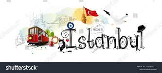

Sample Project 01
Welcome to Istanbul

Istanbul Special
Istanbul is a vibrant and historically rich city located at the crossroads of Europe and Asia, making it one of the world's most unique and captivating destinations. It is the largest city in Turkey and serves as the country's economic, cultural, and historical center. Formerly known as Byzantium and later Constantinople, Istanbul has a rich heritage spanning over thousands of years.
Here are some interesting facts about Istanbul:
- Historical Significance: Istanbul has a remarkable history that dates back to ancient times. It was founded in the 7th century BC and has been an important city throughout various empires, including the Roman, Byzantine, and Ottoman Empires.
- Unique Geography: The city straddles the Bosphorus Strait, which connects the Black Sea to the Sea of Marmara and separates Europe from Asia. The European side is on the west, while the Asian side is on the east.
- Hagia Sophia: One of the most iconic landmarks in Istanbul is the Hagia Sophia, originally built as a cathedral in 537 AD during the Byzantine era. It later became a mosque under Ottoman rule and was eventually converted into a museum. In recent years, it has been reconverted into a mosque.
- Blue Mosque (Sultan Ahmed Mosque): Another famous religious site in Istanbul is the Blue Mosque, known for its impressive blue-tiled interior. It was built in the early 17th century and is still an active mosque, welcoming visitors from around the world.
- Grand Bazaar: Istanbul's Grand Bazaar is one of the oldest and largest covered markets in the world. It dates back to the 15th century and offers a fascinating shopping experience with over 4,000 shops selling everything from jewelry and textiles to spices and traditional Turkish goods.
- Culinary Delights: Turkish cuisine is renowned for its diverse and delicious dishes, and Istanbul is the perfect place to explore this culinary heritage. Don't miss trying traditional delights like kebabs, baklava, Turkish delight, and Turkish coffee.
- Bosporus Cruise: Taking a boat cruise along the Bosphorus is a must-do activity in Istanbul. It offers breathtaking views of the city's skyline, historic landmarks, and waterfront mansions.
- Cultural Melting Pot: Istanbul is a melting pot of cultures, blending influences from Europe, Asia, and the Middle East. This cultural diversity is evident in its architecture, food, music, and traditions.
- Modern Istanbul: While the city is steeped in history, it's also a vibrant and modern metropolis with a thriving art scene, bustling nightlife, and trendy neighborhoods.
- Traffic and Transportation: Istanbul is infamous for its heavy traffic, especially during rush hours. However, the city has an extensive transportation network, including trams, buses, metro lines, and ferries, making it relatively easy to navigate.
Overall, Istanbul's unique blend of history, culture, and modernity makes it an extraordinary destination that continues to captivate visitors from all over the world.
Google Map link
contact
About